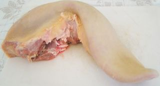
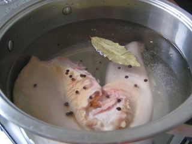
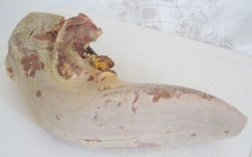
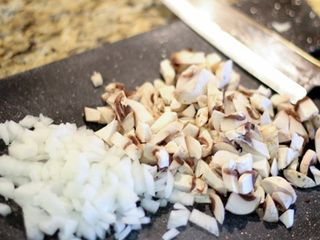
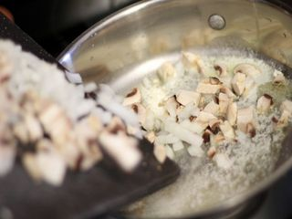
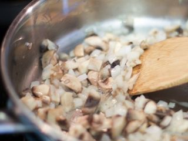
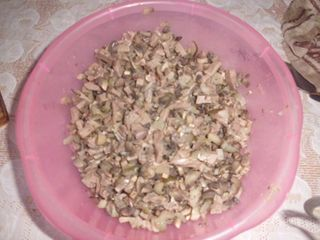
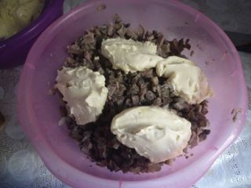
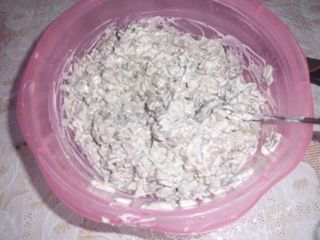

Шаг 1: подготавливаем и варим говяжий язык.

Для начала ставим на сильный огонь глубокую кастрюлю с очищенной водой и доводим ее до кипения. Тем временем промываем говяжий язык, одновременно зачищая его острием ножа от темного налета.

Затем опускаем субпродукт в кипящую воду. Когда она снова начнет бурлить, уменьшаем температуру плиты до среднего уровня и добавляем в кастрюлю по вкусу соль, лист лавра, а также черный перец горошком. Варим язык 2,5 – 3 часа.

По истечении нужного времени проверяем его готовность столовой вилкой. Если зубцы входят в мясо плавно, без напора – субпродукт готов! С помощью шумовки перекладываем его в глубокую миску, наполненную ледяной проточной водой, и держим в ней 2 – 3 минуты.
Затем без промедления очищаем говяжий язык от кожицы. После такой нехитрой процедуры она легко отделится от мяса. В тех местах, где кожица отошла плохо, аккуратно срезаем ее ножом.
Подготовленный субпродукт сушим бумажными полотенцами, выкладываем на разделочную доску и даем ему возможность полностью остыть.
Шаг 2: подготавливаем и тушим грибы с репчатым луком.

Пока остывает язык, приступаем к подготовке других немаловажных продуктов. У каждого шампиньона срезаем корешок, а репчатый лук очищаем от кожуры. Затем промываем овощи под холодной проточной водой и сушим бумажными кухонными полотенцами от лишней влаги. После этого по очереди выкладываем их на разделочную доску и нарезаем кубиками или мелкими кусочками произвольной формы размером около 1 сантиметра. Оставляем нарезки на доске.

Дальше ставим на средний огонь сковороду и вливаем в нее столовую ложку растительного масла. Через некоторое время опускаем в разогретое масло нарезанные овощи и тушим их до мягкости, помешивая кухонной лопаткой. На этот процесс уйдет примерно 12 – 15 минут.

Сначала овощи пустят сок и будут тушиться примерно 5 - 6 минут. Затем начнут постепенно покрываться нежной золотистой корочкой. Когда лук станет прозрачным, а грибы приобретут мягкую текстуру, можно снимать сковороду с плиты. Перекладываем жареные овощи в глубокую миску и приступаем к следующему шагу.
Шаг 3: подготавливаем маринованные огурцы и отваренный язык.

С помощью ключа для консервов открываем баночку с маринованными огурцами. Достаем из нее нужное количество овощей, сушим их бумажными кухонными полотенцами, выкладываем на разделочную доску и режем кубиками или тонкой соломкой. Тем же способом измельчаем говяжий язык и перекладываем обе нарезки в миску с грибами.
Шаг 4: доводим салат до полной готовности.

Туда же добавляем майонез, по вкусу черный молотый перец и, если надо, еще немного соли.

Перемешиваем все составляющие салата столовой ложкой до однородной консистенции, распределяем его по салатницам и подаем к столу. Или настаиваем его в холодильнике пару часов и после этого сервируем.